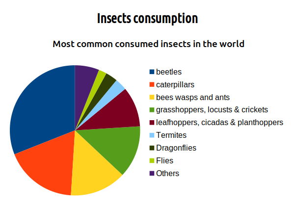

When you hear about eating insects most people gross out. However, Insects are concidered a delicacy in many parts of the world. Most of the insects eaten are farm grown but in some places, they don' shy away from eating insects collected from the wild.
Eating insects is concidered:
Concider ordering sample packs from. Most companies sell them so that you can get to taste their products and choose the one you like.
I have prepared a short list of sample packs you can test out. Brand Flavours included Amazon Cmpany's web store
s less amount of food/plants to rear insects compared to cows.There are more than 2000 edible insects in the world according to Wageningen University & Research, Netherlands. The most commonly consumed insects are:
| Insect | Consumption percentage |
|---|---|
| beetles | 31% |
| caterpillars | 18% |
| bees wasps and ants | 14% |
| grasshoppers, locusts and crickets | 13% |
| leafhoppers, cicadas, planthoppers & true bugs | 10% |
| Termites | 3% |
| Dragonflies | 3% |
| Flies | 2% |
| Others | Others: 6% |
Insects are consumed at different stages of their life cycles. Some of them are:
| Insect | Stage consumed |
|---|---|
| Beetles | Adult or Larva |
| butterflies and Moths | Worms |
| Bees and wasps | Eggs, larvaes or pupaes |
| Ants | Larvae and pupae |
| Crickets, grasshoppers and locusts | Nymph or adult |
| Termite | Winged adults |
These insects are either:
Interesting fact: Eating insects as food is called entomophagy.
Crickets have no so they acquire the flavor of whatever they are mixed with.
Great! I like your enthusiasm. There are 3 ways you can consume insects:
You would need to find out if there is a local restaurant in your area offering bugs in their menu. Eating insect is not yet mainstream so expect this as finding a needle in a haystack.
Since most people have never tasted cricket protein bars, companies offer a starter pack of about 4 flavours. That way if you like one or more flavour, you get to order more of that. You don't get stuck with protein bars you are going to trash.
Concider ordering sample packs from. Most companies sell them so that you can get to taste their products and choose the one you like.
I have prepared a short list of sample packs you can test out. Brand Flavours included Amazon Cmpany's web storeIf you love cooking, you can experiment with some cricket flour in your own recipes or try out other cricket recipes.
You can add the flour to your own recipes to add the nutritional value. Include link with recipes containing cricket flour.
This editor/ writer tasted some cricket bars and wrote a review about it.
energy bars The brands, products, product type and their flavours- A table
| Brands | Product type | Flavours | View on manufacturer website | View on Amazon |
|---|---|---|---|---|
| Chapul | Protein Powder Shake (1lb) | Chocolate | ||
| Chapul | Protein Powder Shake (1lb) | Vanilla | ||
| Chapul | Cricket Bars (sampler) | |||
| Chapul | Cricket Protein Powder | Chocolate | ||
| Chapul | Cricket Protein Powder | Vanilla | ||
| Continent | No. of countries consuming insects |
|---|---|
| Africa | 23 |
| America | 29 |
| Asia | 29 |
| Europe | 11 |
The top 9 countries that are known for insect consumption are: